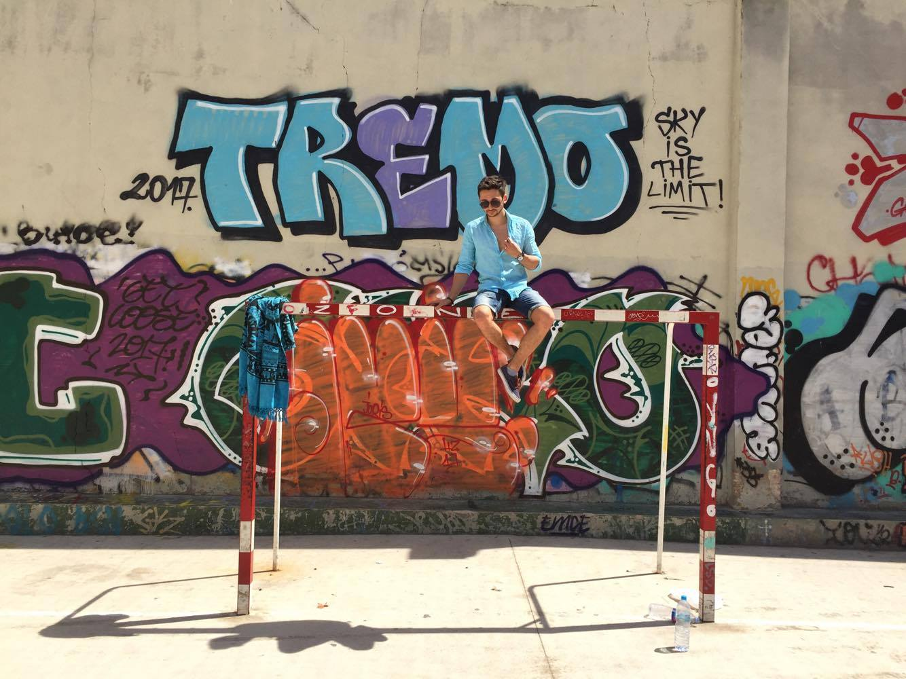
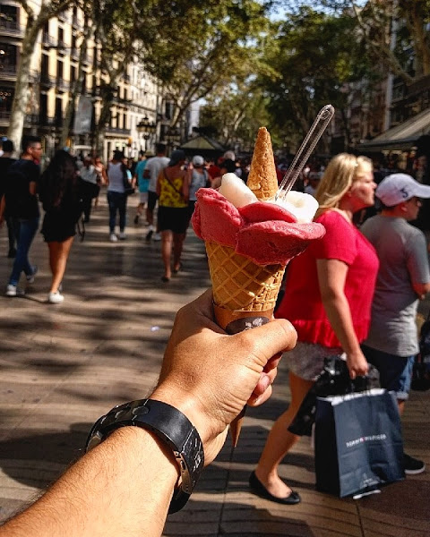

W
ell... this is gonna be a rather short one. I am writing this while cruising back to London from the marvelous Barcelona. Probably one of the best cities in the world ( Just sayin probably so i won't sound too cocky...ofc is the best city in the world).As I am currently working, i 've only managed to stay in Barcelona for 4 days, but not to worry my friends, I ve been going out with every chance that i ve got. My accommodation in Barcelona was not the greatest, but the fact that our host ( let's call him Mr X for now) was a bit crazy, had a super qt dog and offered us free tequila, made everything just about nice. Now ...when I say a bit crazy, I am just trying to be (a bit) polite. When we arrived at mr X's place our first conversation went like this X: how old are you? Me: just gonna turn 21 this year X: si bueno cuz I am looking for a girlfriend ... Like how is that even connected, was that him trying to make small talk...or was he just thinking 'uhh 21 good, your mom must be my age WaaaWaaWeeeWaa'... Well, i guess we'll never know the true reasoning behind this quite weird line of questioning.
But as we were offered tequila every single time we asked for water, I promised Mr. X I shall tell his story, so if anyone feels like they would be a fit match for our host, please don't hesitate to contact me. (Fyi the guy was working as a 'Mainero' so +2 points for that) Anyway, this was Mr. X's story, now back to my story.
 As one of the quotes about which I guide my life goes like this "white buns are only good in hamburgers" I spent quite a lot of time at the beach, soaking up the UV rays in a desperate attempt to get my bun to the sun kissed wanna be look. Sadly because my brain got fried before my bun, I ended up looking more or less like a burnt lobster rather than sun kissed. (Ofc this happened only because I thought using Coco oil will protect me from all the evils in the world). This was how more or less all the days went by.
Now, because I was pretty sure I won't see Barcelona again for quite a while, I tried to have as much sangria as one could in 4 days. I'd say that having 1 liter of sangria for every lunch, was more than enough to proudly be able to say now that probably, I have a little bit of blood in my sangria ( if u know what I mean). Ofc apart from the sangría I also had to try out the amazing local cuisine. This consisting mainly in paellas and fajitas. But let's just say the highlight of my every meal was the sangria.
So there was the beach, there was the food, only the crazy 'fiestas' are left. While in Barcelona I highly recommend trying out Opium and Pacha. They are 2 Ibiza level clubs, that won't disappoint neither in terms of music, location or style. Ofc this implies a specific expensiveness in the drinks and entrance, but while inside, you forget about all that. Basically, it's a whole different world. The only thing which was a Lil bummer for me with this clubs, was the lack of a stronger air con inside, but.. I guess Latino people are hot for a reason ( ahahahaah best 2017).
 Well, this was kind of a long story short version of my Lil London escape( felt great to remember that there is actually a sun somewhere out there) If ever in Barcelona, a couple things that are really breathtaking are the Magic Fountain from playa de España, the sight of Barcelona from Bunker del Carmelo and ofc the mighty Sagrada Familia. ( Not to forget the sangria). One more thing, which is just breathtaking, i keed u not is the mighty ice cream from Amorino gelato. Honeslty one of the best ice creams that i tried in the entire world. Locals say it's made from the spirit of the latin people. (i would have said mostly milk, but meh, who am i to judge).
And now ofcourse, every good adventure needs a happy ending. Well, that is exactly what this one lacked. As i was getting back to london i was watching my phone battery slowly die. With which i was fine...untill, well untill i realised i need to somehow go all the way from the airport back to my place. (for those who never been to London, here the airports are like in a different country - AKA suuper far). All fine so far, before my phone passed away i managed to take a look at the route that i should be taking home so with a lil bit of confidence in my (dory's type) memory, i started my journey. And it was all good, got on the train, waited 17 STOPS... 17!!. Anyway, as i was waiting for my next train, time was passing, 10 min , 20 min..and i was like man...this must be a slow fucking train. To my suprise 20 min later i found out that the line was closed. This is where the fun begun.
Here i was, at 1 AM wondering around in the rain, around an empty train station. And so i wondered around for 1 hour asking people around if they would be kind enough to help me , or to order me a cab or whatever, just help me get home somehow. Imagine how friendly most people were with a soaking wet guy in shorts(cuz well..barcelona is warm not like london) who was dragging along a suitcase. Well, let me tell you not FRIENDLY at all. Some of them ran away in fear, some of them ignored me, some of them even thought i am gonna rob them. But when I almost abandoned all hope (i was already making a plan of where could i sleep in the street without getting robbed or rapped) two polish people (my saviours) decided to jump to my rescue and ordered a cab for me... And so after almost 2h of asking around in the rain and praying that somebody won't be scared of my hobo appearence i managed to get home. I guess adventrues do have a happy ending after all.
Hope u, who ever u r that is reading this, enjoyed my lil story, and maybe u r even looking forward to my next adventure (wanna be) trip.
The one and only... Asul
Mateiasul